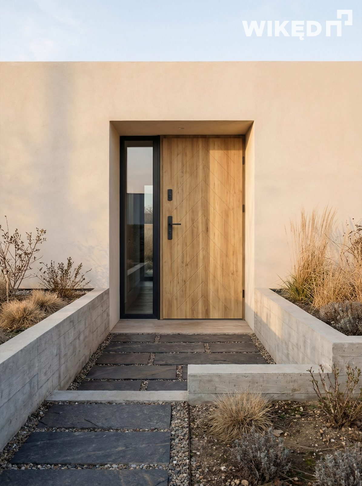
Postaw na drzwi, które łączą estetykę z funkcjonalnością i podkreślają charakter Twojego domu już od samego wejścia.

Wikęd to polski producent drzwi zewnętrznych, który łączy nowoczesne wzornictwo z solidnym wykonaniem. Szeroka oferta modeli, kolorów i dodatków pozwala dopasować drzwi do stylu każdego domu, zapewniając estetykę, komfort i bezpieczeństwo na co dzień.
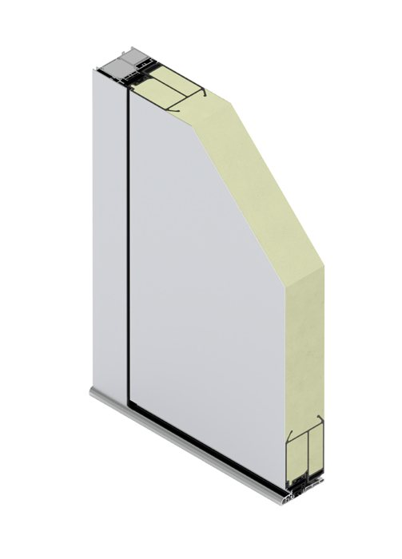
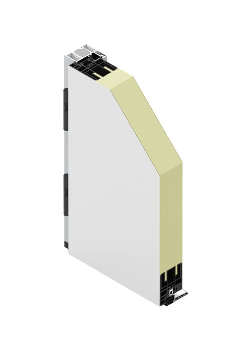
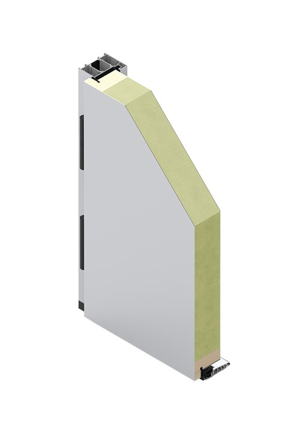
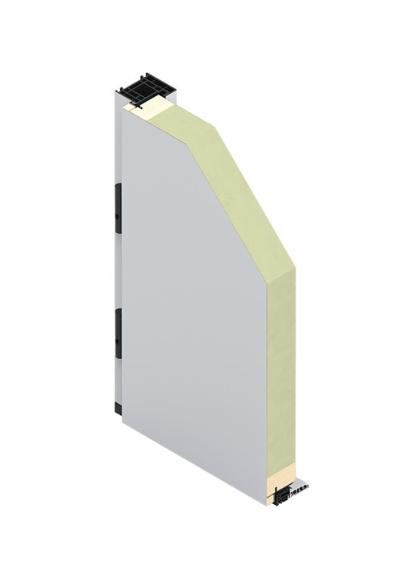
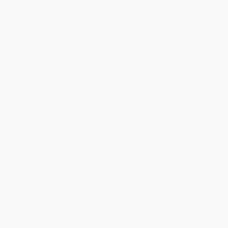
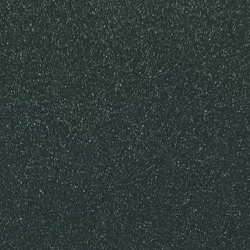
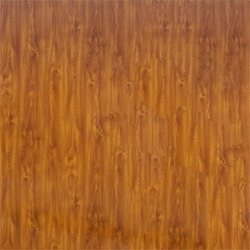
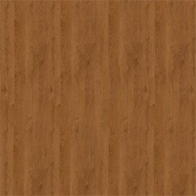
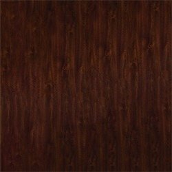
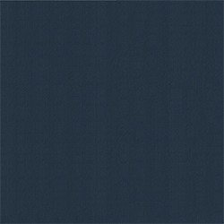
Oraz pełny wzornik RAL K7 Classic.
Ochrona antywłamaniowa do klasy RC2
Izolacyjność cieplna Ud od 0,54 W/m²K
Setki wzorów i dowolna kolorystyka

Erkado to polski producent drzwi z ponad 50-letnim doświadczeniem, oferujący szeroki wybór modeli łączących nowoczesny design z funkcjonalnością. Bogata oferta pozwoli Ci wybrać drzwi odpowiadające Twoim oczekiwaniom.
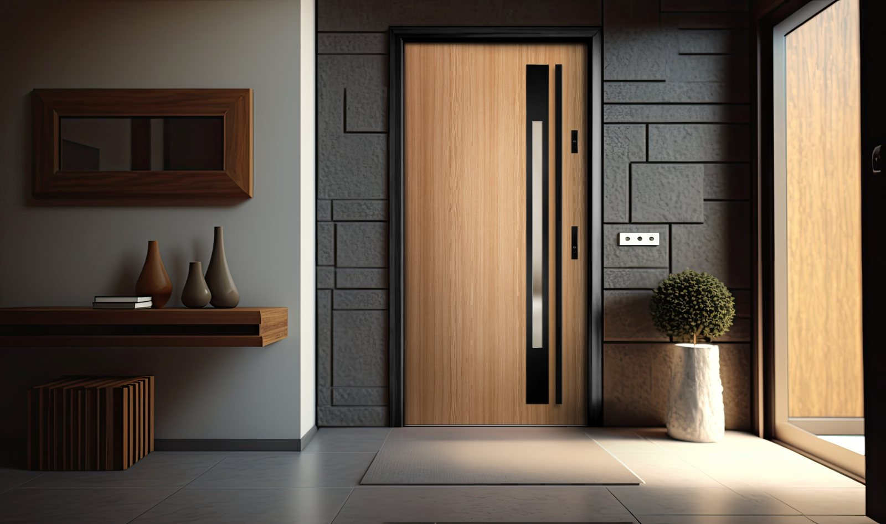
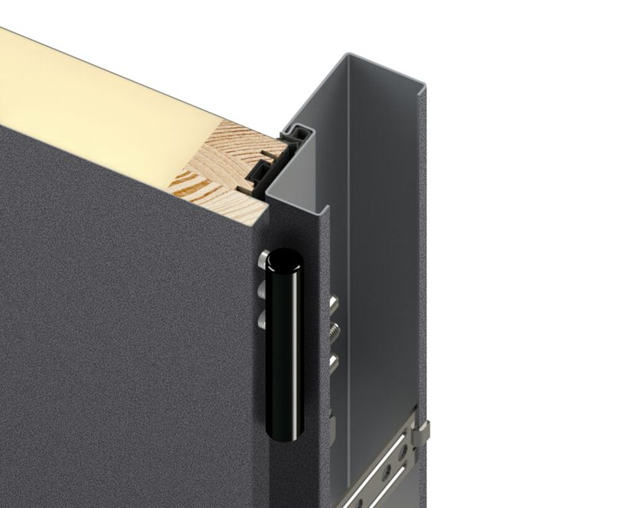
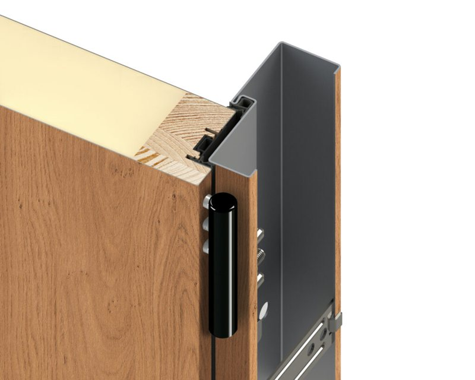
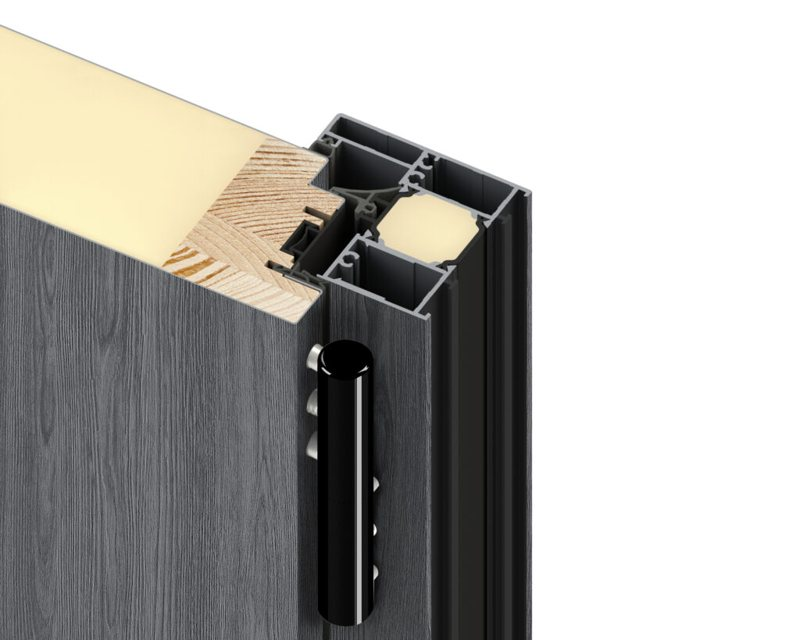
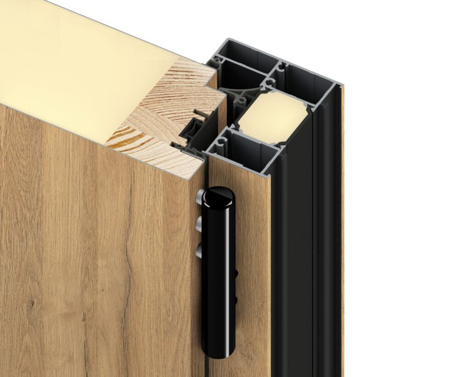
Oraz m.in. złoty dąb, winchester, dąb bagienny, sosna górska i antracyt struktura.
Ud od 0,60 W/m²K w technologii Thermo Hot 88
Zamek listwowy i bolce antywyważeniowe w standardzie
Dopasowanie do otworu w murze co do 1 cm
Skontaktuj się z nami — doradzimy technicznie, precyzyjnie zmierzymy otwory i przygotujemy kalkulację cenową.